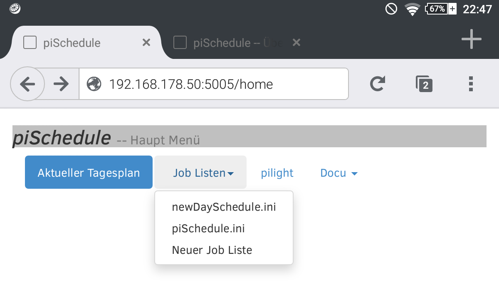
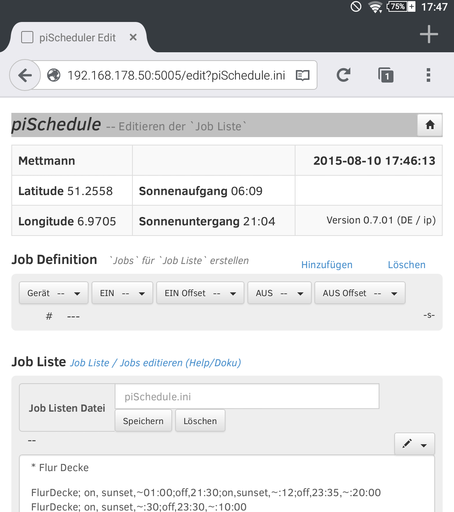
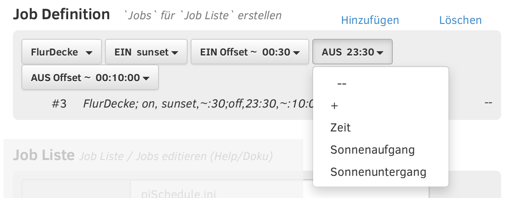
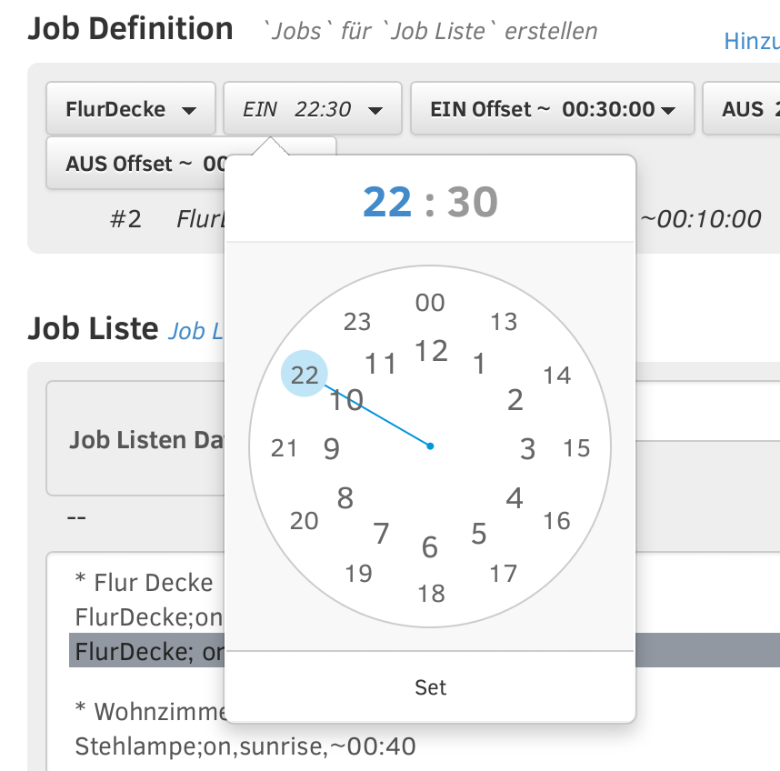

piSchedule Job / Job Listen Editor vers.0.7.2 2015_09-05_14
Geräte, die in pilight definiert sind, können zeitgesteuert mit Hilfe von piSchedule geschaltet werden. Diese Definitionen, bezeichnet als 'Job', werden für die automatische Abarbeitung in einer 'Tagesplan' Datei (.INI/Text Format) gespeichert.
Obwohl sich die .INI/Text Datei auf dem Raspberry mit einem üblichen Editor bearbeiten lässt, ist es vor allem für den IT-ungeübten Benutzer einfacher den Job / Job Listen Editor zu nutzen. Er wird aufgerufen vom piSchedule Hauptmenü:

Dabei wird mit dem Menü [Job Listen] die gewünschte Job Liste ausgewählt und dann zur Bearbeitung dargestellt:

Der Dialog hat drei Teile
- Präferenzen -- die aktuellen Präferenzwerte für Sonnenauf-/untergang basierend auf der Geolocation (Ortsbestimmung) und von Datum/Zeit
- Job Definition -- hiermit wird ein einzelner 'Job' bearbeitet
- Job Liste -- dieser zeigt die 'Jobs' der geöffneten 'Job Listen Datei' - einer .INI-Datei.
Job Definition
Gerät, den Schaltzustand EIN oder AUS und die Schaltzeit Zeit Werte.
Der Bereich 'Job Definition' unterstützt die Erstellung eines 'Jobs' mit Hilfe von sechs Schaltflächen und einer Textzeile.
Die erste Schaltfläche öffnet ein Menü mit den verfügbaren 'Geräten' (diese werden aus der pilight config.json gelesen). Die Schaltzeiten für 'EIN' oder 'AUS' und mögliche Variationen (Offset) mit festen oder zufälligen Zeiten sowie die Auswahl von Sonnenauf-/untergang (sunset/sunrise) werden mit den anderen Schaltflächen konfiguriert.
'EIN' und 'AUS' Zeiten

Der Menüpunkt [ + ] des 'AUS' Menüs gestattet die Definition einer Zeitdifferenz zu der gesetzten bzw. errechneten 'EIN' Schaltzeit.
Mit dem Menüpunkt [ Zeit ] wird die ggf. gesetzte Zeit (im Beispiel 22:30) -- oder falls noch keine Zeit gesetzt war die aktuelle Zeit -- als Vorgabe im nächsten Dialog voreingestellt:

Nach Auswahl der Stunden- bzw. Minutenanzeige läßt sich der "Zeiger" auf den gewünscht Zeitwert setzen und mit [ Setzen ] die Zeit nehmen.
EIN/AUS Offset Zeiten -- absolut oder zufällig
Die [ + ] und [ - ] Tasten setzen einen festen Wert, [ zufällig ] und [ zufällig minus ] generieren einen zufälligen Offset Wert. Dabei gibt der Wert die Spanne an, in der der Zufallswert liegen wird. [ zufällig minus ] verschiebt den Zeitpunkt vor den gesetzten [ EIN ] oder [ Aus ] Wert.
Hinweis: Der resultierende Zeitpunkt wird mit Aktivierung der Job List als 'Aktueller Tagesplan' errechnet.
Schaltfläche [Hinzufügen]
Schaltfläche [Löschen]
Textzeile unter den Schaltflächen
Job Liste
Der Bereich für die 'Job Liste' hat die folgenden Bereiche:
- Angabe der geöffneten "Job Listen Datei" für dem Textdatei Namen und zwei Schaltflächen zum Speichern und Löschen
- Eine Textbox in der alle Jobs der Datei angezeigt werden
- Über der Textbox rechts ein Menü (Bleistift Symbol) um mit dem in der 'Job Liste' gewählten Job zu arbeiten
"Job Liste" bearbeiten
Zur Bearbeitung einer Job Zeile wird diese ausgewählt, dann das Menü (Bleistift Symbol) geöffnet
- [Bearbeiten] übergibt den ausgewählten 'Job' nach oben an den Bereich 'Job Definition'. Dort erscheint dieser Job auf den Schaltflächen und in der Textzeile darunter, somit lässt er sich bearbeiten.
Wie oben gezeigt schreibt dann der Menüpunkt ['Hinzufügen'] den bearbeiteten Job zurück in die Job Liste und zwar als Job/Zeile vor dem ausgewählten Job. Dadurch wird das Original nicht überschrieben, es kann aber mit dem Menü gelöscht werden. - [Löschen] entfernt einen gewählten Job aus der Job Liste
- Zwei Menüpunkte dienen zur Verschiebung einzelner Jobs in der Job Liste
- [Zeile editieren] bietet die Möglichkeit die ausgewählte Zeile direkt zu bearbeiten; so lassen sich auch Leerzeilen oder Kommentare einfügen. (Kommentar beginnt mit einem Sternchenzeichen * )
© neandr -- piSchedule ist ein freies Open Source Projekt -- Feel free to use it.
 Spende was piSchedule Dir wert ist.
Spende was piSchedule Dir wert ist.
Kommentare, Fragen und Rückmeldungen im piSchedule Forum
 Donate what piSchedule is worth for you.
Donate what piSchedule is worth for you.